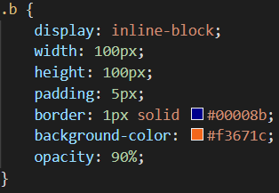
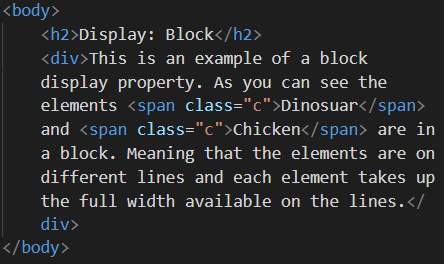

09 September 2021
Display Inline vs Inline-Block vs Block: What's the difference?
This blog will be explore what it means to display inline, inline-block, and block. First thing to know is that the display property determines how HTML elements are are going to be arranged on a website.
Display: Inline
Elements are arranged on the same line and only take up as much width as necessary. However they are not effected by width and height changes but are by margin and padding changes.Changes to margin and padding only effects the elements next to it along the horizontal plane i.e. if they are increased the element will push surrounding elements to the left and right away, but it would then overlap the elements on the lines above and below it. Some elements and tags have a default inline property. These include: span, img, and a elements; em, strong, and i tags.
Display: Inline-Block
Elements are displayed on the same line without line breaks, but allows setting width and height properties so that elements can can arranged next to each other without, overlapping.

Display: Block
Displays the elements on a new line. They take up the full width available on the line by default. Elements are effected by changes in margin, padding, width, and height properties. Some elements have a default block property. These include: div, h1-h6, p, and li.
